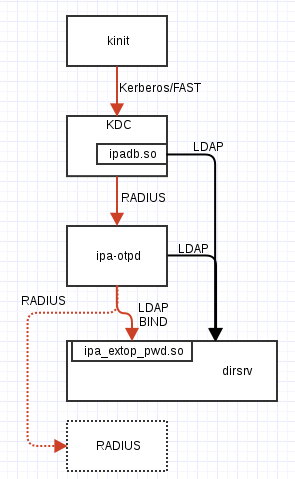

OTP authentication in FreeIPA
As of release 4.0.0, FreeIPA supports OTP authentication. HOTP and TOTP tokens are supported natively, and there is also support for proxying requests to a separately administered RADIUS server.
To become more familiar with FreeIPA and its capabilities, I have been spending a little time each week setting up scenarios and testing different features. Last week, I began playing with a YubiKey for HOTP authentication. A separate blog about using YubiKey with FreeIPA will follow, but first I wanted to post about how FreeIPA’s native OTP support is implemented. This deep dive was unfortunately the result of some issues I encountered, but I learned a lot in a short time and I can now share this information, so maybe it wasn’t unfortunate after all.
User view of OTP
A user has received or enrolled an OTP token. This may be a hardware token, such as YubiKey, or a software token like FreeOTP for mobile devices, which can capture the token simply by pointing the camera at the QR code FreeIPA generates.
When logging in to an IPA-backed service, the FreeIPA web UI, or when running kinit, the user uses their token to generate a single-use value, which is appended to their usual password. To authenticate the user, this single-use value is validated in addition to the usual password validation, providing an additional factor of security.
HOTP algorithm
The HMAC-based One-Time Password (HOTP) algorithm uses a secret key that is known to the validation server and the token device or software. The key is used to generate an HMAC of a monotonically increasing counter that is incremented each time a new token is generated. The output of the HMAC function is then truncated to a short numeric code - often 6 or 8 digits. This is the single-use OTP value that is transmitted to the server. Because the server knows the secret key and the current value of the counter, it can validate the value sent by the client.
HOTP is specified in RFC 4226. TOTP (Time-based One-Time Password), specified in RFC 6238, is a variation of HOTP that MACs the number of time steps since the UNIX epoch, instead of a counter.
Authentication flow
The problem I encountered was that HOTP authentication (to the FreeIPA web UI) was failing about half the time (there was no discernable pattern of failure). The FreeIPA web UI seemed like a logical place to start investigating the problem, but for a password (and OTP value) it is just the first port of call in a journey through a remarkable number of services and libraries.
Web UI and kinit
The ipaserver.rpcserver.login_password class is responsible for handling the password login process. It’s implementation reads request parameters and calls kinit(1) with the user credentials. Its (heavily abridged) implementation follows:
class login_password(Backend, KerberosSession, HTTP_Status):
def __call__(self, environ, start_response):
# Get the user and password parameters from the request
query_dict = urlparse.parse_qs(query_string)
user = query_dict.get('user', None)
password = query_dict.get('password', None)
# Get the ccache we'll use and attempt to get
# credentials in it with user,password
ipa_ccache_name = get_ipa_ccache_name()
self.kinit(user, self.api.env.realm, password, ipa_ccache_name)
return self.finalize_kerberos_acquisition(
'login_password', ipa_ccache_name, environ, start_response)
def kinit(self, user, realm, password, ccache_name):
# get http service ccache as an armor for FAST to enable
# OTP authentication
armor_principal = krb5_format_service_principal_name(
'HTTP', self.api.env.host, realm)
keytab = paths.IPA_KEYTAB
armor_name = "%sA_%s" % (krbccache_prefix, user)
armor_path = os.path.join(krbccache_dir, armor_name)
(stdout, stderr, returncode) = ipautil.run(
[paths.KINIT, '-kt', keytab, armor_principal],
env={'KRB5CCNAME': armor_path}, raiseonerr=False)
# Format the user as a kerberos principal
principal = krb5_format_principal_name(user, realm)
(stdout, stderr, returncode) = ipautil.run(
[paths.KINIT, principal, '-T', armor_path],
env={'KRB5CCNAME': ccache_name, 'LC_ALL': 'C'},
stdin=password, raiseonerr=False)We see that the login_password object reads credentials out of the request and invokes kinit using those credentials, over an encrypted FAST (flexible authentication secure tunneling) channel. At this point, the authentication flow is the same as if a user had invoked kinit from the command line in a similar manner.
KDC
Recent versions of the MIT Kerberos key distrubution centre (KDC) have support for OTP preauthentication. This preauthentication mechanism is specified in RFC 6560.
The freeipa-server package ships the ipadb.so KDC database plugin that talks to the database over LDAP to look up principals and their configuration. In this manner the KDC can find out that a principal is configured for OTP authentication, but this is not where OTP validation takes place. Instead, an OTP-enabled principal’s configuration tells the KDC to forward the credentials elsewhere for validation, over RADIUS.
ipa-otpd
FreeIPA ships a daemon called ipa-otpd. The KDC communicates with it using the RADIUS protocol, over a UNIX domain socket. When ipa-otpd receives a RADIUS authentication packet, it queries the database over LDAP to see if the principal is configured for RADIUS or native OTP authentication. For RADIUS authentication, it forwards the request on to the configured RADIUS server, otherwise it attempts an LDAP BIND operation using the passed credentials.
As a side note, ipa-otpd is controlled by a systemd socket unit. This is an interesting feature of systemd, but I won’t delve into it here. See man 5 systemd.socket for details.
Directory server
Finally, the principal’s credentials - her distinguished name and password with OTP value appended - reach the database in the form of a BIND request. But we’re still not at the bottom of this rabbit hole, because 389 Directory Server does not know how to validate an OTP value or indeed anything about OTP!
Yet another plugin to the rescue. freeipa-server ships the libipa_pwd_extop.so directory server plugin, which handles concepts such as password expiry and - finally - OTP validation. By way of this plugin, the directory server attempts to validate the OTP value and authenticate the user, and the whole process that led to this point unwinds back through ipa-otpd and the KDC to the Kerberos client (and through the web UI to the browser, if this was how the whole process started).
Diagram
My drawing skills leave a lot to be desired, but I’ve tried to summarise the preceding information in the following diagram. Arrows show the communication protocols involved; red arrows carry user credentials including the OTP value. The dotted line and box show the alternative configuration where ipa-otpd proxies the token on to an external RADIUS server.

Debugging the authentication problem
At time of writing, I still haven’t figured out the cause of my issue. Binding directly to LDAP using an OTP token works every time, so it definitely was not an issue with the HOTP implementation. Executing kinit directly fails about half the time, so the problem is likely to be with the KDC or with ipa-otpd.
When the failure occurs, the dirsrv access log shows two BIND operations for the principal (in the success case, there is only one BIND, as would be expected):
[30/Jul/2014:02:58:54 -0400] conn=23 op=4 BIND dn="uid=ftweedal,cn=users,cn=accounts,dc=ipa,dc=local" method=128 version=3
[30/Jul/2014:02:58:54 -0400] conn=23 op=4 RESULT err=0 tag=97 nentries=0 etime=0 dn="uid=ftweedal,cn=users,cn=accounts,dc=ipa,dc=local"
[30/Jul/2014:02:58:55 -0400] conn=37 op=4 BIND dn="uid=ftweedal,cn=users,cn=accounts,dc=ipa,dc=local" method=128 version=3
[30/Jul/2014:02:58:55 -0400] conn=37 op=4 RESULT err=49 tag=97 nentries=0 etime=0The first BIND operation succeeds, but for some reason, one second later, the KDC or ipa-otpd attempts to authenticate again. It would make sense that the same credentials are used, and in that case the second BIND operation would fail (error code 49 means invalid credentials) due to the HOTP counter having been incremented in the database.
ipa-otpd does some logging via the systemd journal facility, so it was possible to observe its behaviour via journalctl --follow /usr/libexec/ipa-otpd. The log output for a failed login showed two requests being send by the KDC, thus exonerating ipa-otpd:
Aug 04 02:44:35 ipa-2.ipa.local ipa-otpd[3910]: ftweedal@IPA.LOCAL: request received
Aug 04 02:44:35 ipa-2.ipa.local ipa-otpd[3910]: ftweedal@IPA.LOCAL: user query start
Aug 04 02:44:35 ipa-2.ipa.local ipa-otpd[3910]: ftweedal@IPA.LOCAL: user query end: uid=ftweedal,cn=users,cn=accounts,dc=ipa,dc=local
Aug 04 02:44:35 ipa-2.ipa.local ipa-otpd[3910]: ftweedal@IPA.LOCAL: bind start: uid=ftweedal,cn=users,cn=accounts,dc=ipa,dc=local
Aug 04 02:44:36 ipa-2.ipa.local ipa-otpd[3935]: ftweedal@IPA.LOCAL: request received
Aug 04 02:44:36 ipa-2.ipa.local ipa-otpd[3935]: ftweedal@IPA.LOCAL: user query start
Aug 04 02:44:37 ipa-2.ipa.local ipa-otpd[3935]: ftweedal@IPA.LOCAL: user query end: uid=ftweedal,cn=users,cn=accounts,dc=ipa,dc=local
Aug 04 02:44:37 ipa-2.ipa.local ipa-otpd[3935]: ftweedal@IPA.LOCAL: bind start: uid=ftweedal,cn=users,cn=accounts,dc=ipa,dc=local
Aug 04 02:44:37 ipa-2.ipa.local ipa-otpd[3910]: ftweedal@IPA.LOCAL: bind end: success
Aug 04 02:44:37 ipa-2.ipa.local ipa-otpd[3910]: ftweedal@IPA.LOCAL: response sent: Access-Accept
Aug 04 02:44:38 ipa-2.ipa.local ipa-otpd[3935]: ftweedal@IPA.LOCAL: bind end: Invalid credentials
Aug 04 02:44:38 ipa-2.ipa.local ipa-otpd[3935]: ftweedal@IPA.LOCAL: response sent: Access-RejectThe KDC log output likewise showed two KRB_AS_REQ requests coming from the client (i.e. kinit) - one of these resulted in a ticket being issued, and the other resulted in a KDC_ERR_PREAUTH_FAILED response. Therefore, after all this investigation, the cause of the problem seems to be aggressive retry behaviour in kinit.
I had been testing with MIT Kerberos version 1.11.5 from the Fedora 20 repositories. A quick scan of the Kerberos commit log turned up some promising changes released in version 1.12. Since the Fedora package for 1.11 includes a number of backports from 1.12 already, I backported the most promising change: one that relaxes the timeout if kinit connects to the KDC over TCP. Unfortunately, this did not fix the issue.
I was curious whether version the 1.12 client exhibited the same behaviour. The Fedora 21 repositories have MIT Kerberos version 1.12, so I installed a preview release and enrolled the host. OTP authentication worked fine, so the change I backported to 1.11 was either the wrong change, or needed other changes to work properly.
Since HOTP authentication in FreeIPA is somewhat discouraged due to the cost and other implications of counter synchronisation in a replicated environment, and since the problem seems to be rectified in MIT Kerberos 1.12, I was happy to conclude my investigations at this point.
Concluding thoughts
OTP authentication in FreeIPA involves a lot of different servers, plugins and libraries. To provide the OTP functionality and make all the services work together, freeipa-server ships a KDC plugin, a directory server plugin, and the ipa-otpd daemon! Was it necessary to have this many moving parts?
The original design proposal explains many of the design decisions. In particular, ipa-otpd is necessary for a couple of reasons. The first is the fact that the MIT KDC supports only RADIUS servers for OTP validation, so for native OTP support we must have some component act as a RADIUS server. Second, the KDC radius configuration is static, so configuration is simplified by having the KDC talk only to ipa-otpd for OTP validation. It is also nice that ipa-otpd is the sole arbiter of whether to proxy a request to an external RADIUS server or to attempt an LDAP BIND.
What if the KDC could dynamically work out where to direct RADIUS packets for OTP validation? It is not hard to conceieve of this, since it already dynamically learns whether a principal is configured for OTP by way of the ipadb.so plugin. But even if this were possible, the current design is arguably preferable since, unlike the KDC, we have full control over the implementation of ipa-otpd and are therefore better placed to respond to performance or security concerns in this aspect of the OTP authentication flow.

Except where otherwise noted, this work is licensed under a Creative Commons Attribution 4.0 International License .